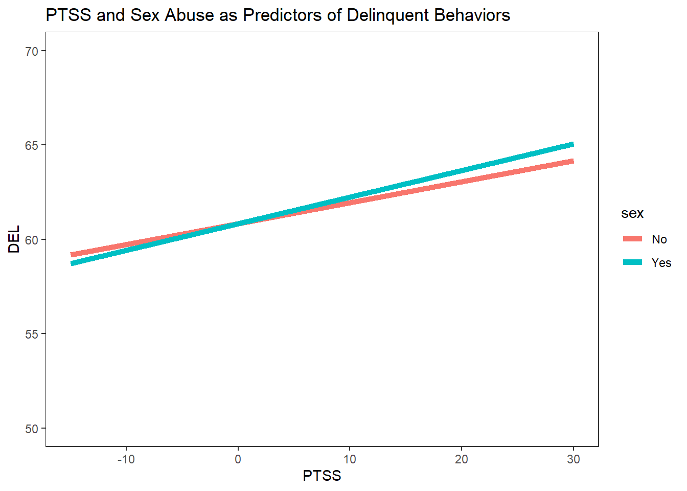

Please download the markdown file so you can run the code on your computer. Please attempt to replicate my example below BEFORE downloading the code. Remember the 10 minute rule. Right click –> Save As …
Note
This assignment builds upon Public Health Foundational Knowledge GIA-1 and Foundational Competencies GIA-1. Note to submit this email me with the subject “Problem Set 2”
Task 1: Confounding
Go the the example page for this week, “Coundounding”, and work through the analyses I replicated based on the article for that week.
Please make sure you are familiar with how to interpret and calculate risk ratios (RR) and odds ratios (ORs)
In RStudio, go to “File” > “New File…” > “R Markdown…” and click “OK” in the dialog without changing anything.
Run the following code
Note
Answer the questions A - K below. You can simply type text in the white space, and write R code in the chunks. Note: I have written all of the code except for J. and K. below. The code you need to answer J and K can be found here
A. Go through the code and identify which each package is doing. Note that the code opens .SAV files not .CSV files so it is slightly different from what we have seen before.
library(foreign)library(dplyr)
Attaching package: 'dplyr'
The following objects are masked from 'package:stats':
filter, lag
The following objects are masked from 'package:base':
intersect, setdiff, setequal, union
library(epitools)library(effects)
Loading required package: carData
lattice theme set by effectsTheme()
See ?effectsTheme for details.
library(epitools)library(ggplot2)
Warning: package 'ggplot2' was built under R version 4.3.3
The following code uses the language of tidyverse to select, filter, factor, recode, and clean the data. Go line by line and explain what each line is doing (hint, the best way I have found to learn is to run each line and see how the data changes). For example, run this:
# A tibble: 1,881 × 2
sex PTSD
<chr> <fct>
1 No No PTSD
2 Yes PTSD
3 No No PTSD
4 No No PTSD
5 No No PTSD
6 No No PTSD
7 No No PTSD
8 Yes No PTSD
9 No No PTSD
10 No No PTSD
# ℹ 1,871 more rows
p1 <-ggplot(data=interact, aes(x=tra1_mean, y=fit, group=sex))+coord_cartesian(ylim =c(50,70))+#For ylim, specify the range of your DV (in our case, 50-70)geom_line(size=2, aes(color=sex))+ylab("DEL")+xlab("PTSS")+ggtitle("PTSS and Sex Abuse as Predictors of Delinquent Behaviors")+theme_bw()+theme(panel.grid.major=element_blank(),panel.grid.minor=element_blank())+scale_fill_grey()
Warning: Using `size` aesthetic for lines was deprecated in ggplot2 3.4.0.
ℹ Please use `linewidth` instead.
p1

I. Interpret the visualization:
Does higher levels of PTSS matter more for engagement in delinquent behaviors for youth who have been sexually abused? Why/Why not?